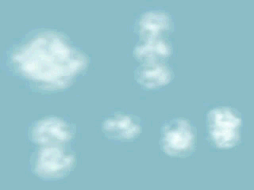
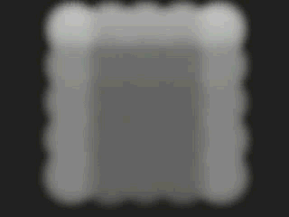

粒子云着色器是一种体积材质，可以将其指定给使用“云”(Cloud)渲染类型的粒子，以实现诸如气体或云之类的效果。
有关创建和指定材质的信息，请参见将颜色和着色应用于对象。
可以设定这些属性为固定值，或在粒子的寿命期间纹理映射它们。如果已映射，则该贴图的 V 值被映射到粒子的寿命。也可以使用“粒子采样器信息”(Particle Sampler Info)节点，使用每粒子属性控制它们。
粒子云的基本颜色。默认的颜色为绿-蓝色。
控制可以看穿粒子云的程度。它是一种颜色，以便可以分别控制红色、绿色和蓝色通道的透明度。若要使云更加不透明，将透明度设定为更暗。若要使云更加透明，请将透明度设定为更加量（透明度 = 1-不透明度）。
使用“白炽度”(Incandescence)来使粒子云变得更亮，就如同它是光源一样。默认情况下，白炽度为黑色，意味着不添加辉光。
当启用“白炽度”(Incandescence)后，尽管粒子云会发出辉光，但是它不会投射光线到场景中的其他对象上。
确定在粒子寿命中的特定时间的颜色。可以使用“粒子采样器信息”(Particle Sampler Info)节点来设置该参数在整个粒子寿命的动画（请参见粒子采样器信息节点）。
确定在粒子寿命中的特定时间的透明度。可以使用“粒子采样器信息”(Particle Sampler Info)节点来设置该参数在整个粒子寿命的动画（请参见粒子采样器信息节点）。
确定在粒子寿命中的特定时间的白炽度。可以使用“粒子采样器信息”(Particle Sampler Info)节点来设置该参数在整个粒子寿命的动画（请参见粒子采样器信息节点）。
控制将被添加到粒子云的类似光晕的辉光数量。在完成渲染后，该辉光效果将在后期处理时添加。“辉光强度”(Glow Intensity)的默认设置为 0，表示未添加任何辉光。
类似于透明度；它控制粒子云显示的稠密程度，以及通过其可以看到背景的程度。增加该值可使云更加稠密。
指定应用到粒子云的透明度的比例因子。可以将 3D 纹理与其连接，以便为云提供其从粒子获得的（内部纹理或形状）之外的某种内部纹理或形状。
控制噪波的不规则性。该值越小，形状越不圆滑。
下面的动画显示了“圆度”(Roundness)属性从 1 更改为 0。
指定仅用于计算阴影的密度的比例因子。半透明值越大，越多光线会穿透。公式为：
density * (1 - translucence)
下面的动画显示了“半透明”(Translucence)属性从 0.4 更改为 0.6。
控制粒子云内的抖动。如果该值被设定为 0，则云看起来非常平滑，整体非常均匀。随着噪波数量的增加，云将看起来更加粗糙，如同电视屏幕上的静电一样。默认情况下，噪波被设定为 0.75。
确定启用“噪波”(Noise)时噪波瑕疵的大小。较高的“噪波频率”(Noise Frequency)值会产生更小、更精细的瑕疵，而较低的值会产生更大、更粗糙的瑕疵。如果“噪波频率”(Noise Frequency)设定为零，这与禁用“噪波”(Noise)效果相同。
控制噪波分布（当启用“噪波”(Noise)后）。它的默认值为零，这意味着噪波被均匀分布在 X 和 Y 中。正值使噪波与粒子路径垂直。负值会使噪波更加与路径平行。
指定用于控制动画期间内置噪波更改速率的比例因子。
确定核心的大小，即粒子为不透明的区域。
控制将从粒子反射场景中的多少光。大多数材质都会吸收照射在它们上的某些光，并散射其余光。
默认值为 0.0。如果将此值设定为 1.0，则照射到该材质的所有光线将被反射。当创建密云时，使用较大的值。如果将该值设定为 0.0（最小），则不反射灯光，同时不出现曲面着色。
表面颜色由透明度调整。该值可以大于 1.0，以使表面特性即使在材质透明的情况下仍会显示。
指定粒子云表面（与云内部相反）的基本颜色。“漫反射系数”(Diffuse Coeff)必须设定为大于 0 的值才能启用该选项。
通过依照凹凸贴图纹理中的像素强度来改变曲面法线（在渲染期间），使曲面看起来粗糙或凹凸。“漫反射系数”(Diffuse Coeff)必须设定为大于 0 的值才能启用该选项。
凹凸贴图实际上不会改变曲面。曲面的轮廓将看起来很平滑。
模拟光以漫反射穿透半透明对象的方式。这意味着当灯光照射在对象一侧时，另一侧只有部分被照亮。可以使用该选项来创建效果，如云、毛发、头发、大理石、翡翠、蜡、纸张、树叶等。如果将“半透明系数”(Translucence Coeff)设定为 0（默认值），则没有灯光会透过对象。如果将“半透明系数”(Translucence Coeff)设定为 1，所有光都会穿透。“漫反射系数”(Diffuse Coeff)必须设定为大于 0 的值才能启用该选项。
确定曲面着色是否与预照明一起使用，如果启用的话，其中将包含阴影（请参见过滤半径属性）。“漫反射系数”(Diffuse Coeff)必须设定为大于 0 的值才能启用该选项。
该云着色器使用表面颜色和表面着色阴影来创建爆炸。
体积粒子使用预照明，默认情况下，这会在每个粒子的中心对照明求值。如果动画中的照明更改过快，这有时会导致弹出，在启用表面着色阴影后显得尤为明显。
过滤半径允许您过滤预照明结果，以便过滤半径内的所有预照明结果的每个粒子中心的值将被平均。较大的值会增加渲染时间，但会生成更加平滑的图像。